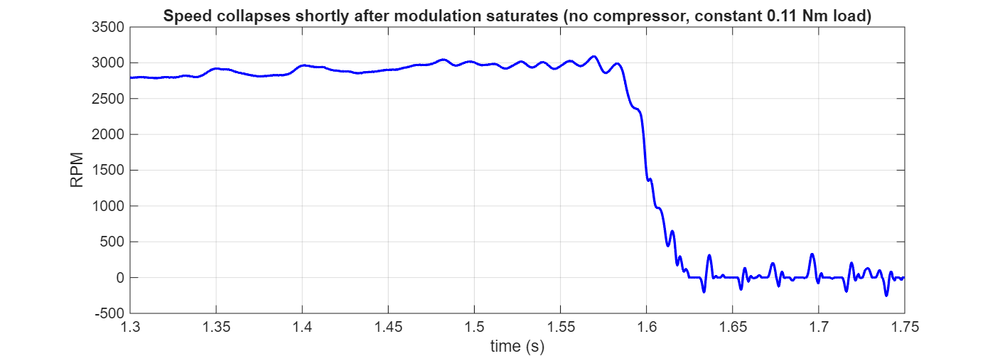
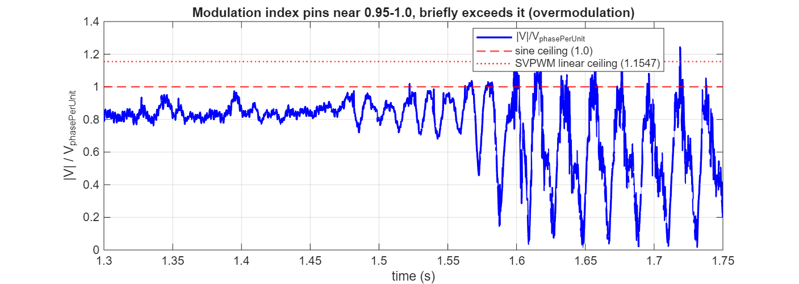
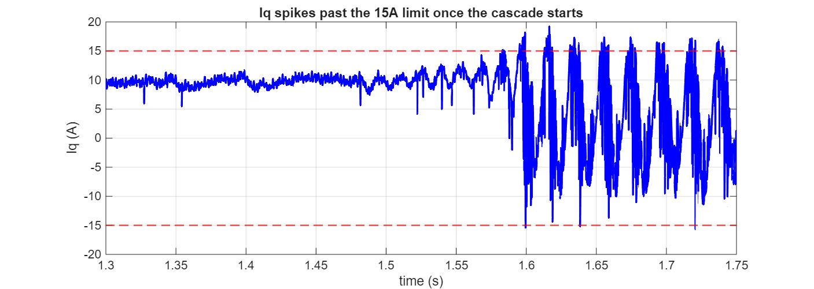
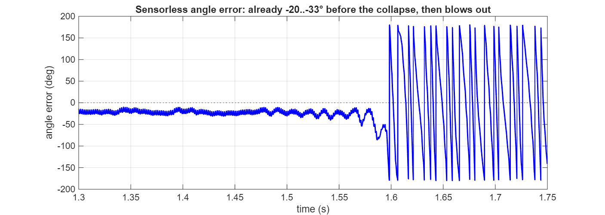

My_1SH_FOC — internal reference
What modulation index actually is, why every motor drive has a voltage ceiling that rises with speed, where this model pins against it, how the sensorless angle error was measured, and what to do about it.
With the speed loop correctly closed on the sensorless estimate (we_est_mech, filtered, not the real sensor) and a plain constant 0.11 Nm load — no compressor involved — the motor accelerates smoothly from the sensorless handoff up to about 3089 RPM, then collapses to a stall within about 40 ms.

This motor's own rated maximum, per motorParameters.m (Option.Product==4, this BDnanoEV configuration): BDnano.Motor.nMax_MaximalSpeedrpm = 3000. The stall happens almost exactly at this motor's documented ceiling — not an arbitrary control failure, but the system running into a real limit.
A three-phase inverter builds up an AC voltage waveform for the motor by rapidly switching a fixed DC bus voltage on and off (PWM). The average voltage over one switching cycle is controlled by how long the switch stays on — the duty cycle. Modulation index is simply a normalized measure of how much of the available DC bus voltage is being asked for, as a fraction of the maximum the inverter can deliver as a clean sine wave:
modulation index = (commanded phase voltage amplitude) / (maximum achievable phase voltage amplitude)At index 0, the inverter outputs nothing. At index 1 (100%), it's already asking for the largest sinusoidal voltage the bus can produce. Push further and the commanded waveform can no longer be reproduced faithfully — welcome to overmodulation, where the output distorts (flattens at the top, gains harmonics) because the inverter is being asked for more voltage than a clean sine wave at this bus voltage can supply.
This project already has two named voltage scales in ss_params.m, exactly tracking the two circles in Fig. 2:
| Name | Value | Meaning |
|---|---|---|
p.VphasePerUnit | Vbus/2 = 6.000 V | Volts per 1.0 of Valpha/Vbeta entering the SVPWM stage — confirmed by this project's own measured voltage-ceiling speed (4260 RPM), not the theoretical value. |
p.VphaseMaxLinear | Vbus/√3 = 6.928 V | The textbook SVPWM linear-modulation ceiling (the inscribed circle, scaled) — a theoretical bound, not necessarily what this inverter actually achieves. |
The diagnostic logging computed |V| = sqrt(Valpha² + Vbeta²) directly from this project's own Valpha/Vbeta Goto-tagged signals (already in this per-unit convention, where 1.0 = VphasePerUnit), and divided by that same per-unit base — i.e. exactly the modulation-index definition above, using this project's own established scale factors, not an assumed textbook one.

|V|/V_phasePerUnit through the collapse. It sits at 0.95 for several consecutive samples right before the peak RPM, and briefly reaches 1.32 over the full run — solidly into overmodulation, well past the "is there any more voltage to give" line.The voltage the inverter must supply at any instant has to cover three things: the resistive drop (I·R), the inductive drop (L·dI/dt), and — the dominant one at any meaningful speed — the back-EMF the spinning rotor itself generates (E = Ke·ω). Back-EMF grows linearly with speed, while the bus voltage is fixed. So as speed rises, an ever-larger share of the same fixed voltage budget goes just to "keeping up with" the motor's own back-EMF, leaving less and less margin for the I·R and L·dI/dt terms that actually push current — and therefore torque — through the windings.
This is exactly why nMax_MaximalSpeedrpm = 3000 exists as a rating in the first place — it's the speed at which this motor's Ke, on this 12 V bus, consumes essentially all the available voltage.

Iq stays within its 15 A limit while voltage is merely near saturation, then spikes past it (peak 19.2 A) once the cascade is already underway — current saturation here is a consequence of the voltage problem, not the trigger (contrast with the compressor-load stall, where current saturation was the primary, standalone cause).This model, for validation only, carries the real Simscape rotor angle (theta_ele, from the plant's own rotational sensor) alongside the sensorless estimate the controller actually uses (theta_est_next, the PLL's output). Neither is normally visible to a true sensorless product — this project keeps theta_ele around specifically so claims like "the estimate is off by X degrees" can be checked against ground truth rather than guessed at.
The method, concretely: both signals were logged via temporary To Workspace taps on their existing Goto-tagged signals (theta_ele, theta_est_next), at the same simulation timestamps. The raw difference between two wrapped angles (both live in [0, 2π)) isn't meaningful on its own — e.g. 359° and 1° are 2° apart, not 358° — so the error is wrapped back into a signed ±180° range:
angErr_deg = mod((theta_ele - theta_est_next)*180/pi + 180, 360) - 180;This is the same wrap-aware technique used everywhere else in this project's own diagnostics (e.g. diffwrap for speed-from-angle). Plotting angErr_deg against time is what showed the error sitting at -18° to -33° for several samples before the collapse, then swinging past ±150° once lock is lost:

The observer's own current-prediction equation (ss_sto_observer_step.m) is built on an assumption: that Valpha/Vbeta, the voltage it's told was applied, is the voltage that actually reached the motor.
Ialpha_est_next = Ialpha_est + (Ts/Ls)*(Valpha_v - Rs*Ialpha_est - Bemf_alpha_est) + G1*Ialpha_errUnder normal (unsaturated) operation, that assumption holds — the PWM faithfully reproduces whatever Valpha/Vbeta was commanded, on average. Once modulation index pins at or above 1.0, it stops holding: the inverter physically cannot deliver more voltage than the bus allows, so the actual applied voltage clips below what the controller thinks it commanded. The observer's internal model is now being fed a wrong input exactly when it's least equipped to tolerate it — its own Bemf/current estimate, and therefore the angle derived from it, drifts away from reality specifically because of the saturation, not merely alongside it. That's the mechanism behind Fig. 6's error already climbing before the dramatic part of the collapse: voltage saturation and angle-tracking error feed each other once the margin runs out.
Ke) landing almost exactly on this motor's own rated 3000 RPM — and the failure mode when the system is pushed past it is an uncontrolled stall, not a graceful limit.
The simplest, lowest-risk fix: cap the speed reference meaningfully below nMax_MaximalSpeedrpm (with margin — the collapse started before literally hitting 3000, so the safe ceiling is probably closer to 2700-2800 than 3000 outright), the same way a real product's firmware would never ask the motor for more than its rated speed in the first place.
Rather than (or in addition to) a fixed cap, monitor the modulation index (|V|/V_phasePerUnit, exactly as computed here) and apply a protective limit — e.g. clamp the speed-loop's output or reduce the reference — once it crosses a threshold like 0.9, well before the hard saturation and the angle-tracking degradation that follows it. This is more robust than a fixed RPM cap because it reacts to the real physical constraint (voltage, which varies with load and bus-voltage sag) rather than an assumed speed number.
If the real application genuinely needs speeds at or above this motor's natural (Id=0) ceiling, the standard technique is field weakening — deliberately injecting a negative Id to partially cancel the rotor's flux and reduce the back-EMF the inverter has to fight. This is a substantial control-architecture addition (a field-weakening controller managing the Id reference based on available voltage headroom), not a quick tuning change, and is only worth pursuing if the target application's speed requirement actually exceeds this motor's rated 3000 RPM — worth confirming that's really needed before investing in it.
Section 6/7 measured the sensorless angle error sitting at -18° to -33° (the estimate leading the real angle by roughly 25° on average) even during otherwise-stable running, well before any voltage saturation. The question that matters practically: is this a problem worth fixing, or something the system can tolerate?
With Id=0 control, the stator current vector is meant to sit exactly 90° from the rotor's true flux axis — that's the torque-maximizing position for a surface-PM/BLDC machine. Commutating on an angle that's off by φ doesn't just mis-report the angle, it physically rotates the applied current vector away from that optimal position by φ:
Iq_true = I × cos(25°) = 0.906 × I -> ~9.4% less torque per amp of current
Id_true = I × sin(25°) = 0.423 × I -> wasted current: I²R loss, zero torque contributionSo for the same commanded current magnitude, roughly 9-10% less torque comes out, and a meaningful chunk of current (42% of the commanded magnitude) is doing nothing but heating the windings. Referencing Fig. 6's own data: this is a steady, structural characteristic of this implementation, not something unique to the near-saturation regime — it shows up during otherwise-normal running too.
This directly compounds the problem documented in Compressor_Load_Strategy.html: that stall was caused by current saturation (22.6 A demanded vs. a 15 A limit) at the compression peak. A ~10% torque-per-amp penalty from commutation error means the system needs even more current than an ideally-aligned drive would to meet the same torque demand — tightening a margin that was already the root cause of the stall.
A synchronous machine only truly loses sync as the commutation error approaches ±90° (zero net torque-producing current); 25° has substantial margin before that regime, and this system has been observed running stably at lower speeds with errors in this same range. There's also no proven quick fix available yet — retuning G1 and lowering the PLL bandwidth were both tried (see Observer_PLL_Explained.html) and neither helped; the underlying cause is the structural non-sinusoidal back-EMF mismatch (section 10 of that document), not a simple gain to adjust.
The feed-forward's own angle lookup is comparatively more tolerant of this same error: since it's indexed by the mechanical crank angle (integrated from we_est_mech, already in mechanical rad/s), a steady 25° electrical offset maps to roughly 25°/pole_pairs ≈ 8° of mechanical mistiming — a modest ~2% smear on a 360° profile, not a dealbreaker.